Développement d’une maquette donnée par nos professeurs. À partir d’un fichier de base nous devons faire le html, le css et quelques éléments prédéterminés en JavaScript (Swiper, Snackbar, Scrolly, etc). Par la suite nous mettons en ligne le site sur notre espace étudiant, nous changeons aussi notre code pour l’adapter en PHP. Nous terminons avec les ACF et CPT en ajoutant le contenu final par WordPress à la place de le mettre en html.
Type de Projet
Scolaire
Langage
Crédits
Images: Unsplash
Fonts: Google Fonts
Pour certains projets nous avons utilisé des extensions WordPress pour créer des formulaires ou pour maximiser la sécurité de notre site. Nous avons aussi vu des outils externes comme GenerateWP pour générer des CPT.